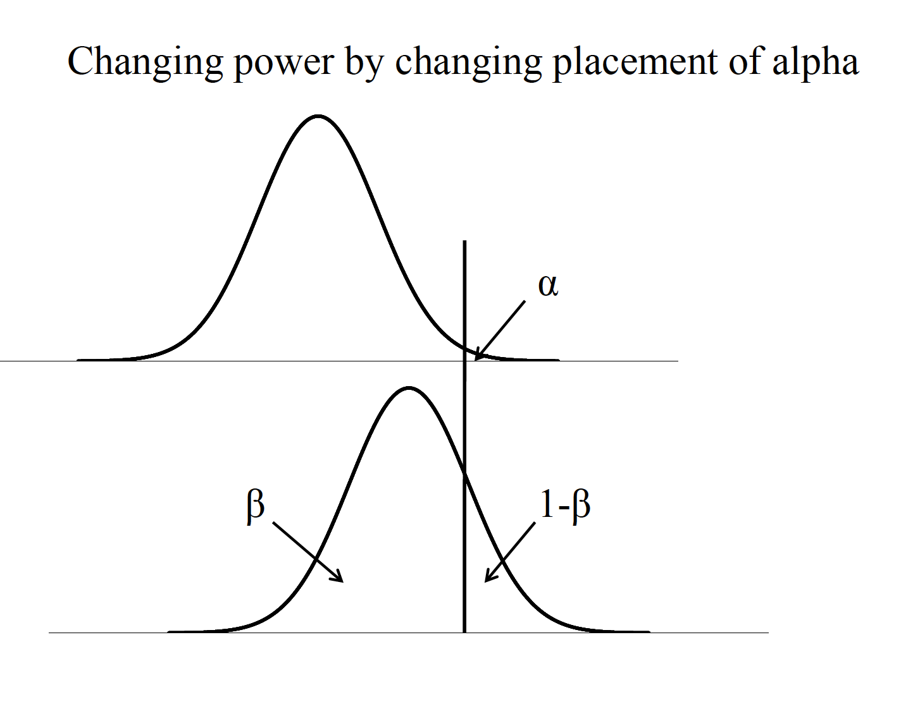
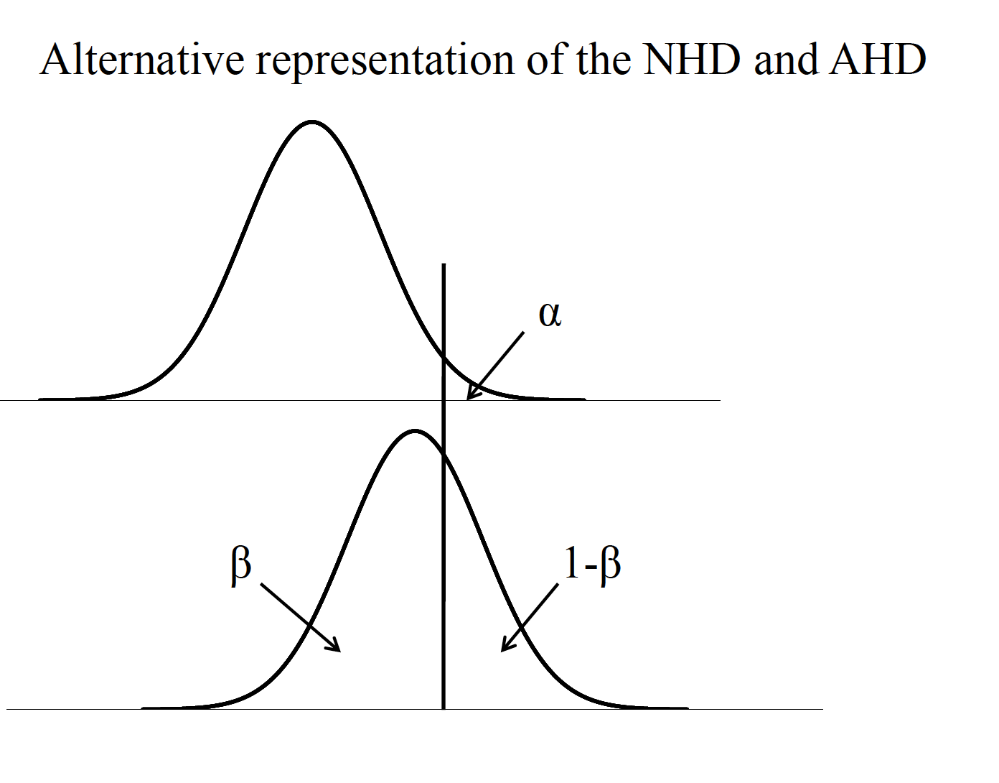
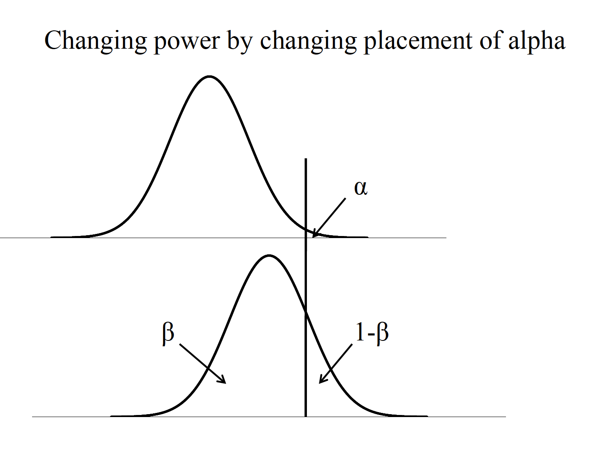
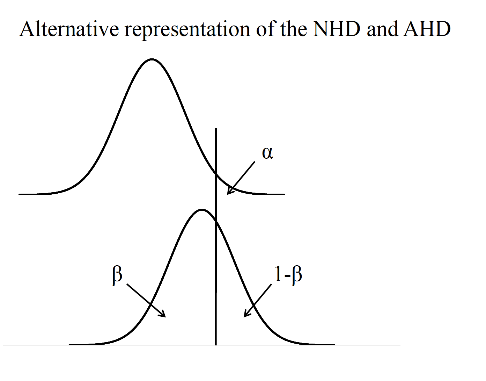

Chapter 8 Power, Confidence Intervals, Effect Size Measures
8.1 Power
We have discussed the fact that the conclusions drawn from hypothesis tests are essentially inferences about population parameters, based on sample information. But we have thus far neglected a discussion of what statistical factors should be considered in planning and assessing research-based hypothesis tests.
By minimizing the probability of a Type II error (β), we are at the same time increasing the amount of powerof our hypothesis test (1-β). Power is defined as the probability of rejecting the null hypothesis when it is false (i.e., should be rejected). Four important factors affect the power of a statistical test.
Knowing any three of these factors mathematically fixes the fourth. Thus, one can use these factors in determining the appropriate design for a particular study. Sample size is most often the targeted factor in formulating such a plan.

Table
Careful planning of research involves minimizing Type I andType II errors. One rule of thumb is that \(\beta\) should be no more than .20 (e.g., if \(\alpha\) = .05, \(\beta\) = .20). c.For the t test, if the null hypothesis distribution is centered on a t value of 0, then the noncentralt distribution represents the alternative hypothesis distribution, centered on \(\delta\). -This represents the average t value one would expect for a given effect size and sample size

Noncentral T
8.1.1 Test Equations
One Sample tests
$ = d$ \(d = \frac{\bar{X}-\mu}{\sigma}\) \(g = \frac{\bar{X}-\mu}{s}\)
Two sample tests
\(\delta = d\sqrt{\frac{n}{2}}\) \(d = \frac{\mu_1-\mu_2}{\sigma}\) \(g = \frac{\bar{X_1}=\bar{X_2}}{s_p}\)
For unequal n
\(n_n = \frac{2n_2n_2}{n_1 + n_2}\) \(g = t\sqrt{\frac{n_1 + n_2}{n_1n_2}}\)

Noncentral T
Effect size (ES) or standardized effect size (e.g., d). i. The difference between population means (e.g., \(\mu1-\mu2\)). ii. The population standard deviation (\(\sigma\)).

Noncentral T
8.1.2 Factors of Power
- Effect size (ES) or standardized effect size (e.g., d). The difference between population means (e.g., \(\mu_1-\mu_2\)). The population standard deviation (\(\sigma\)).
- Sample size (\(n\)).
- Significance level (\(\alpha\)).
- Directionality of the hypothesis test (one-tailed vs. two-tailed).

  
  
One sample case
\(\delta = d\sqrt{n}\) \(n = (\frac{\delta}{d})^2\)
two sample case
\(delta = d\sqrt{\frac{n}{2}}\) \(n = 2(\frac{\delta}{d})^2\)
A clinical psychologist wants to test the hypothesis that people who seek treatment for psychological problems have higher IQs than the general population. To test her hypothesis, she wants to use the IQ values from 25 randomly selected clients and also to calculate the power to find a 5-point difference in IQ. The mean of the population would be 100 and, therefore, the mean of her clients a 105. The population SD for IQ is 15. (This scenario is from Howell’s 2002 text “Statistical Methods for Psychology”)
Known: \(\mu_{client}=105\) \(\mu_{pop}\) \(\sigma_{pop} = 15\)
Calculate it with
\(d = \frac{105-100}{15} = 0.33\)
\(\delta = d\sqrt{n} = 0.33\sqrt{25}=1.65\)
Given this information and an expected alpha (two-tailed) of .05, we can find in Table A.4 in the Cohen text that the power is between .25 and .50, and more exactly about halfway in between (around .38). What does this value of .38 mean?
If power should be at or above .80, what does the clinician do? Increase alpha? Decrease the population SD? Increase the difference between population means? Increase sample size? For a power level of .80, δneeds to be 2.80, from Table A.4
\(n = (\frac{\delta}{d})^2=(\frac{2.80}{0.33}^2 = 8.48^2 = 71.91\)
8.2 Confidence Ientervals
Sample measures of central tendency, such as the mean, are considered point estimates of population parameters. Confidence intervals are considered a type of interval estimation for population parameters.
Computation of confidence intervals.
Capture percentage, prediction, and replication
Over repeated sampling from a known distribution, the confidence interval represents the percentage of such intervals that contain the population mean. Can be set at any percentage: 90%, 95%, 99% Based on characteristics of the sampling distribution (zor t) and therefore highly related to the manner in which sampling distributions are used for NHST But CIs and pvalues from NHST are not the same thing!!!

Hicks CI 1
Confidence Interval for single sample mean
\(\bar{X} = +- (t_{cv})s_{\bar{X}}\)
Confidence interval for a mean difference scores (dependent samples)
\(\bar{D} +- (t_{cv})s_{\bar{D}\)
Confidence interval for a difference between sample means (independent samples)
\((\bar{X_1}-\bar{X_2}) +- (t_{cv})(s_{\bar{X_1}-\bar{X_2}})\)
The instructor of an introductory psychology course is interested in knowing if there is a difference in the mean grades on the final exam between the fall and spring semester classes. Summary data for the two samples is below:
What are the 95% confidence intervals around each sample mean, and around the difference between the sample means?
fall <- c(82.4,150,11.56)
spring <- c(84.2,150,11.44)
stat <- c("Mean","N","s2")
grades <- data.frame(stat,fall, spring)
grades## stat fall spring
## 1 Mean 82.40 84.20
## 2 N 150.00 150.00
## 3 s2 11.56 11.44What are the 95% confidence intervals around each sample mean, and around the difference between the sample means?
Confidence Interval for single sample mean
\(\bar{X} = +- (t_{cv})s_{\bar{X}}\)
This has critical value of 1.97 +-.
First need to find the standard error with each one.
$s_{X} = = = = 0.28 $
$s_{X} = = = = 0.28 $
Now do CI for both
\(\bar{X} = +- (t_{cv})s_{\bar{X}}\)
\(82.4 +- (1.97)(0.28)\) \(82.4 +- 0.55\) \((81.85, 82.95)\)
\(84.2 +- (1.97)(0.28)\) \(84.4 +- 0.55\) \((83.65, 84.75)\)
Calculate that now for differences
\((\bar{X_1}-\bar{X_2}) +- (t_{cv})(s_{\bar{X_1}-\bar{X_2}})\)
\(s_{\bar{X_1}-\bar{X_2}}= \sqrt{0.07 + 0.07} = \sqrt{0.14}=0.37\)
Alpha value associated with this is 1.96.
\(82.4 - 84.2) +- (1.96)(0.37)\) \(-1.8 +- 0.73 = (-2.53,-1.07)\)
Important points to keep in mind regarding confidence intervals:
- They are two-tailed by nature (i.e., on either side of a sample mean).
- For a given sample size, increasing the level of confidence (e.g., from 95% to 99%) increases the interval width.
- The narrower the interval (at a given level of confidence!) reflects better statistical precision. Sample size directly affects the width of the interval by affecting the standard error estimate.
8.2.1 Capture Percentage
Capture percentage, prediction, and replication What is the likelihood that a subsequent experiment will replicate? Concept of capture percentage: likelihood that a subsequent sample mean will fall into the CI of the current sample.

Hicks CI 2